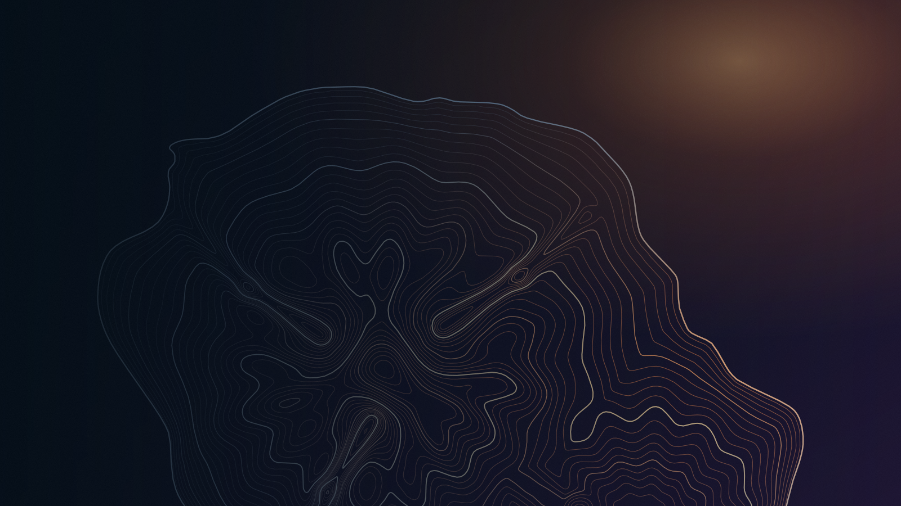
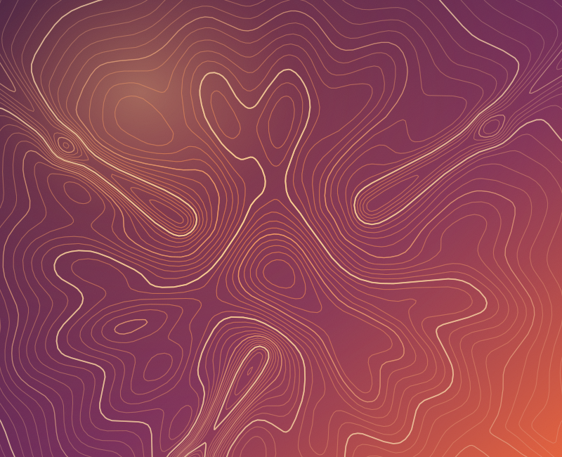
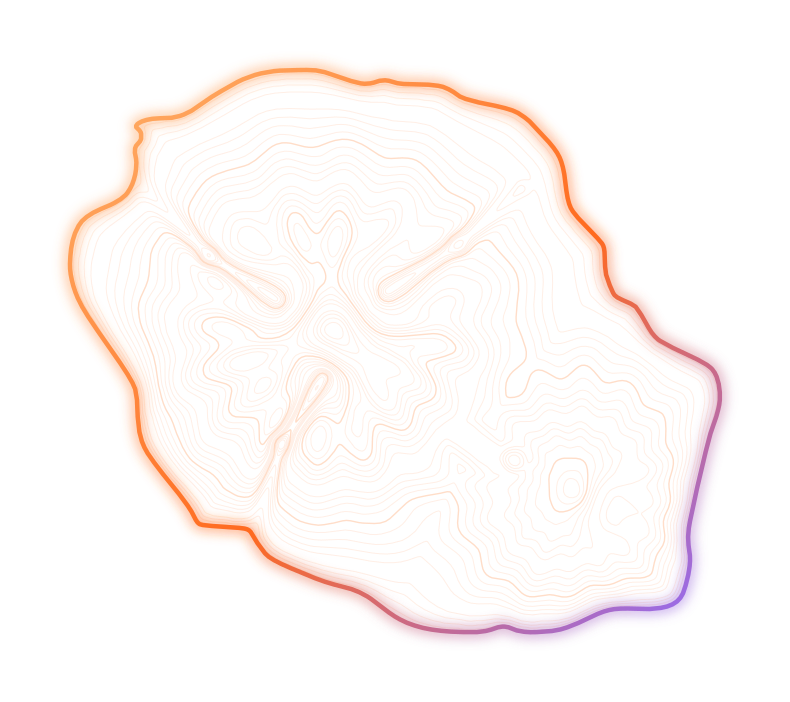
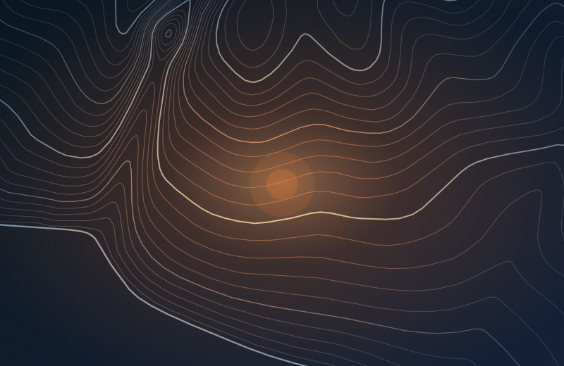
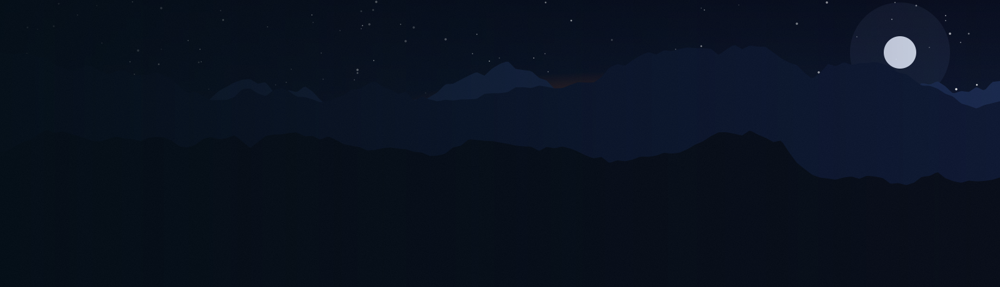

Conférences
Des talks inspirants par des expert·es et des passionné·es, du terrain à la pointe de la recherche.

Conférences / CTF / Communauté
La cybersécurité
a aussi son île.
Conférences, ateliers et CTF : la cyber par la communauté, pour la communauté. Rendez-vous le mardi 9 mars 2027 à l’ESIROI de Saint-Pierre.

À venir
À la une · CyberTour La Réunion
BSides Réunion sponsorise le CyberTour et prend en charge ses épreuves de Capture The Flag. Les défis se jouent sur ctf.inge.re, seul ou en équipe. BSides Réunion a organisé les épreuves de Capture The Flag du CyberTour le 23 octobre 2026. Prochain rendez-vous : BSides Réunion 2027, le 9 mars 2027.
Le CyberTour est organisé dans le cadre du Cybermois d’octobre, par le CLUSIR Réunion Océan Indien et l’Université de La Réunion. Programme complet sur cybertour.re
Qu’est-ce que BSides Réunion ?
BSides est une série de conférences décontractées et communautaires sur la cybersécurité, née pour offrir un espace aux sujets qu’on n’aborde pas dans les grands événements. BSides Réunion en est la version de l’île : une journée pour échanger, se rencontrer et mettre la main à la pâte.
L’événement est organisé par l’association BSides Réunion, avec l’aide de bénévoles, selon un code de conduite qui s’applique à toutes et à tous.
Des talks inspirants par des expert·es et des passionné·es, du terrain à la pointe de la recherche.
Relève les défis, teste tes skills, rejoins la compétition. Les épreuves se jouent sur ctf.inge.re.
Échange, partage, rencontre : une communauté bienveillante, portée par des bénévoles de l’île.
Un cadre exceptionnel entre montagnes, océan et culture créole.

CTF
Le CTF de BSides La Réunion, c’est l’occasion de tester tes compétences, de te mesurer à d’autres équipes et de vivre une expérience intense et fun. Au CyberTour, c’est nous qui organisons les épreuves.
Accéder à ctf.inge.reRendez-vous sur ctf.inge.re depuis un navigateur. Tout se passe là.
Seul·e ou en équipe : mélangez les profils, c’est ce qui rend un CTF amusant.
Classés par catégorie et par difficulté. Commencez par ce qui vous parle.
Un flag trouvé, on le saisit. Les points tombent, le classement bouge.
Conférences
Des experts, des praticiens, des chercheurs… et des passionnés qui viennent partager leurs retours d’expérience, leurs découvertes et leurs visions du futur.
Voir le bilan 2026Édition précédente
L’édition 2026 de BSides Réunion s’est tenue le 2 avril à l’IUT de Saint-Pierre. Un grand merci à toutes et tous pour cette journée riche en échanges et en challenges !
Retours des participants à l’issue de la journée du 2 avril 2026.
Infos pratiques

Comment venir
Accès : bus, arrêt « Technopole » ; en voiture, direction Saint-Joseph, sortie IUT / ESIROI. Privilégiez la marche, le vélo ou le covoiturage.

La carte ne se charge qu’à votre clic : Google peut alors déposer des traceurs.
S’engager
BSides Réunion vit grâce à celles et ceux qui s’y impliquent. Il y a trois façons de s’y mettre.
Proposez une conférence, un atelier ou une démo pour 2027. Découvrez le principe, ce que nous attendons des intervenant·es et comment postuler.
Proposer une interventionAccueil, logistique, modération de salle : l’événement repose sur ses bénévoles. En échange, accès à l’événement, T-shirt Staff et repas.
Devenir bénévoleEntreprise, institution ou association : vous voulez soutenir la communauté cyber de La Réunion ? Découvrez les formules de partenariat.
Devenir partenaire
Prêt·e pour l’aventure ?
Écris-nous dès maintenant et sois parmi les premiers à vivre cette édition inoubliable.